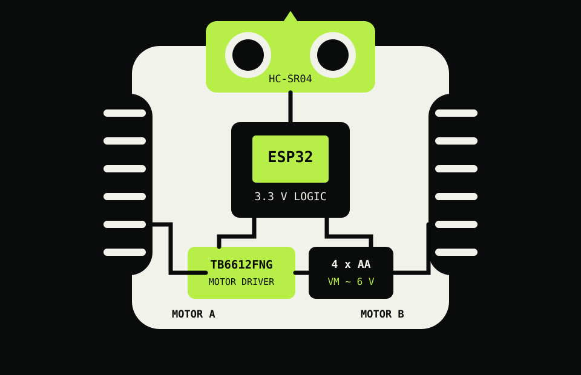
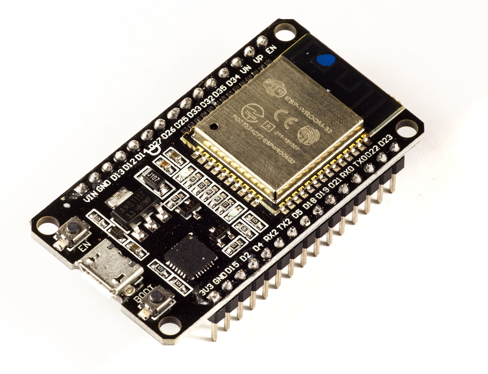
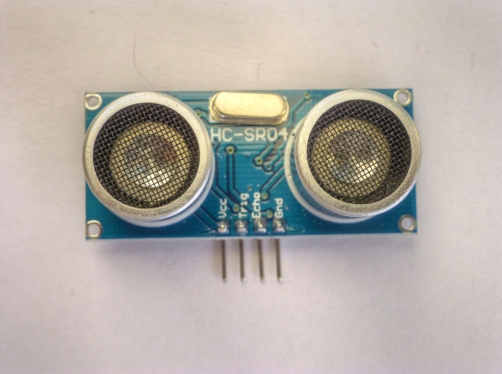

Nuestro workflow con IA para construir hardware
De software a un robot verificable.
Este es el resultado que vamos a construir.
Un robot de dos ruedas que mide, decide y gira.

Primero definimos comportamiento, no componentes.
Estas son las piezas sobre la mesa.


Cada pieza tiene una responsabilidad.
El robot tiene dos dominios de energía.
GPIO, señales y control.
Corriente y movimiento.
Ambos comparten GND. No comparten la misma carga.
Construimos el robot por etapas.
Revisar continuidad.
Leer distancia.
Girar elevados.
Unir decisiones.
Probar en el piso.
El agente empieza con contexto.
Datasheets exactos y pinout de la placa.
Componentes y resistencias disponibles.
Voltajes, corriente, pines y alimentación.
Conexiones y mediciones confirmadas.
Reservamos los pines antes de pedir código.
SEÑALGPIOREGLA
TRIG17Salida digital
ECHO18Entrada protegida
PWMA / PWMB25 / 13PWM
AIN1 / AIN226 / 27Dirección A
BIN1 / BIN214 / 32Dirección B
STBY33Debe estar alto
En Cursor, pedimos arquitectura antes de código.
Usa solo este inventario.
Devuelve conexiones, voltajes,
fuentes, riesgos y una prueba
sin energía.
Detente antes de generar código.Mapa Origen → destino
Fuente Datasheet exacto
Riesgo Conexión bloqueada
Prueba Siguiente evidencia
El agente propone un mapa de conexiones.
GPIO 17→TRIGPROPUESTO
ECHO · 5 V→GPIO 18 · 3.3 VRIESGO
GPIO 25 / 13→PWMA / PWMBPROPUESTO
GPIO 33→STBYPROPUESTO
Validamos cada conexión con la misma plantilla.
Voltaje y tipo de salida.
Límite y dirección del pin.
Documento y revisión exacta.
Continuidad o medición segura.
ECHO entrega 5 V. El GPIO trabaja a 3.3 V.
HC-SR04 ECHO5 V
≠
ESP32 GPIO3.3 V
Conectar directamente puede dañar la entrada.
Corregimos la señal antes de conectarla.
HC-SR04ECHO · 5 V
→
R11 kΩ
→
GPIO 18≈ 3.3 V
→
R22 kΩ → GND
Vout = Vin × R2 / (R1 + R2)
Cursor genera la prueba más pequeña del sensor.
Lee distancia por serial. Usa los pines aprobados. Excluye motores.
const distance = readDistanceCm();
Serial.println(distance);
delay(100);
SERIAL · 115200
46.2 cm
31.8 cm
19.6 cm
Probamos los motores con las ruedas elevadas.
digitalWrite(STBY, HIGH);
setMotorA(80);
setMotorB(80);1 Medir VM
2 Confirmar STBY alto
3 Girar un motor a la vez
4 Verificar dirección
Ahora unimos medición y movimiento.
const distance = readDistanceCm();
if (distance < 20) {
stop();
turnRight();
} else {
forward();
}distancia ≥ 20avanzar
distancia < 20detener + girar
Cada estado tiene una evidencia visible.
La distancia cambia en serial.
Ambas ruedas giran al frente.
PWM llega a cero.
Las ruedas giran en sentidos distintos.
El sensor funciona. Las ruedas siguen detenidas.
Medimos antes de cambiar código.
Ordenamos hipótesis por costo y riesgo.
H1No llega alimentación a VM.Medir voltaje.
H2STBY sigue en bajo.Medir nivel lógico.
H3PWM o dirección están mal.Revisar señales.
Medimos VM antes de tocar el firmware.
PUNTA ROJAVM
+
PUNTA NEGRAGND
0.0 V
Esperábamos aproximadamente 6 V
Con una medición, el agente propone una prueba concreta.
VM = 0.0 V. USB activo. Sensor estable. Prioriza una prueba sin cambiar firmware.
Mide batería antes y después del switch. Corrige el primer punto que pierda voltaje.
VM ≈ 6 V → habilitamos motores → las ruedas giran
El síntoma solo produce respuestas genéricas.
“El robot se reinicia. Arréglalo.”
Delay, reintentos y cambios de librería.
Brownout al arrancar motores. La línea de 3.3 V cae.
Revisar alimentación antes de cambiar firmware.
Potencia separada → GND común → medir otra vez
Antes de energizar, verificamos seis cosas.
01Polaridad
02Voltajes
03GND común
04Continuidad
05Pines exactos
06Ruedas elevadas
El robot termina cuando cumple cuatro pruebas.
Lee una distancia real
Avanza recto
Se detiene a 20 cm
Gira y continúa
Vibecoding hardware = cambiar, medir y actualizar.
Fuentes y montaje.
Conexiones y código.
Antes de energizar.
La realidad responde.
El agente recibe evidencia.
La IA propone.
La realidad responde.
Construye con contexto. Verifica antes de conectar.